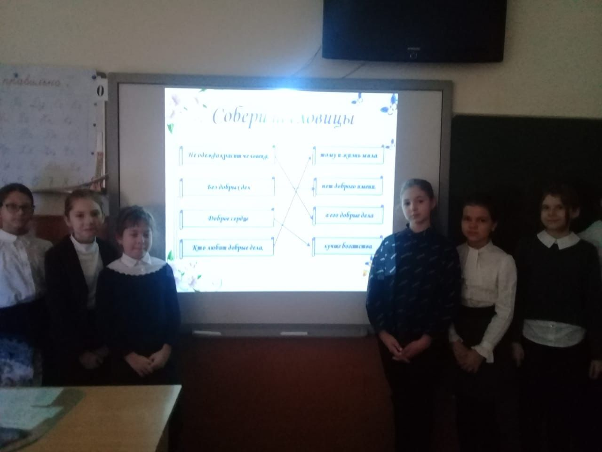
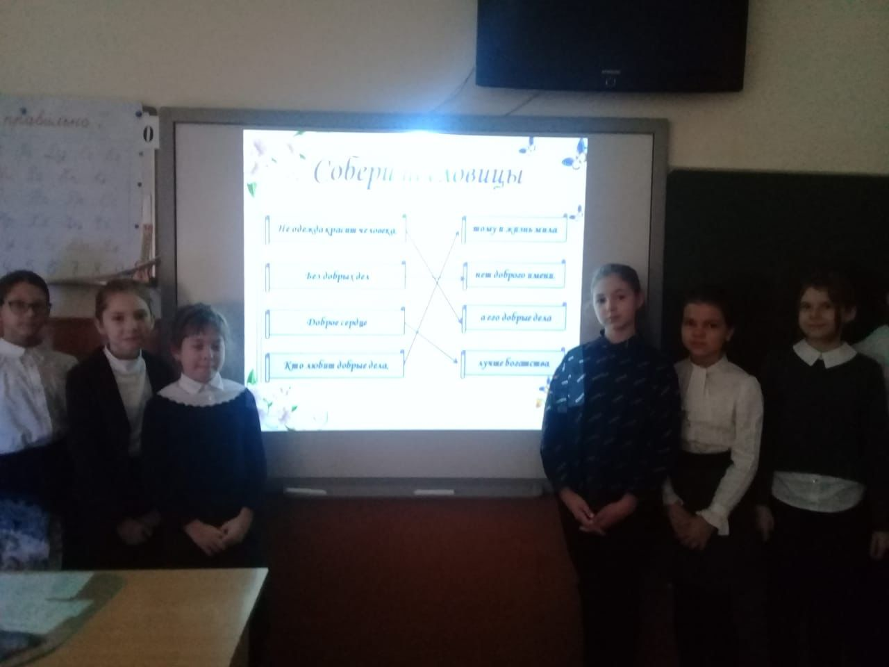

Муниципальное бюджетное общеобразовательное учреждение гимназия №1 города Светлограда
С 3 по 8 декабря 2021 года во 3 – 11 классах гимназии №1 были проведены уроки Доброты, прирученные к Международному дню инвалидов (3 декабря). В рамках уроков учащиеся узнали понятие «инвалидность» и о проблемах, с которыми сталкиваются люди с ограниченными возможностями здоровья. Учащиеся 3-х классов посмотрели фильм «Внутренний мир». Учащимся 10 – 11классов были показаны фильмы «Белая ворона», «О чем мечтают медведи». В начальных классах были проведены беседы «Что такое добро?». На примерах детям было рассказано, какой смысл люди вкладывают в понятие «добро», «зло», о том, что доброта делает нас отзывчивыми и терпимыми, способными дарить окружающим заботу и любовь. В нашем современном мире такие качества, как доброта, милосердие, начали уступать место себялюбию, эгоизму, черствости, равнодушию, хамству, высокомерию. Этого нельзя допускать. Обучающиеся обсуждали утверждения «Быть добрым легко», «Человека можно заставить быть добрым», «Можно стать добрым на время», «Добротой можно принести вред», «За добром всегда платят добром». Ребята с удовольствием участвовали в обсуждении темы, связанной с добротой, заботой, участием, милосердием. Думаем, после этих классных часов детям захотелось проявить участие и доброту не только к близким, но и к совершенно незнакомым людям, нуждающимся в помощи. К Дню инвалидов в гимназии были проведены Уроки доброты. На этих уроках были затронуты вопросы о жизни и возможностях детей с ОВЗ, как они живут, с какими трудностями и проблемами сталкиваются в обществе. Человек с ОВЗ – такой же человек, как все, различие лишь в том, что при необходимости он вынужден затрачивать больше усилий и времени, чем здоровые люди
Всероссийский день правовой помощи детям
в Ставропольском крае
Уважаемые жители Петровского городского округа!
19 ноября 2021 года в Ставропольском крае проводится Всероссийский день правовой помощи
детям.
В условиях сохранения опасности распространения новой коронавирусной инфекции данное
мероприятие пройдет в онлайн – режиме.
Получить консультативную помощь по вопросам правовой помощи детям, родителям, педагогам в
разных сферах жизнедеятельности Вы можете с 08.00 до 12.00 час и с 13.00 до 17.00 час по
следующим телефонам:
 

| Тематика правовых консультаций | Телефон | Ответственный специалист |
|---|---|---|
| Функционирование системы образования Петровском городском округа | 8(86547) 4-03-05 | Шевченко Наталья Анатольевна, начальник отдела образования |
| Конституционные права. Организация предоставления начального общего, основного общего, среднего общего образования | 8(86547) 4-33-56 | Савченко Светлана Игоревна, заместитель начальника отдела образования |
| Организация подготовки и проведения государственной итоговой аттестации в 9 и 11 классах | 8(86547) 4-26-65 | Коробейникова Светлана Федоровна, ведущий специалист отдела образования |
| Организация горячего питания в общеобразовательных организациях | 8(86547) 4-26-65 | Коваленко Елена Анатольевна, ведущий специалист отдела образования |
| Соблюдение трудового законодательства в образовательных организациях | 8(86547) 4-26-65 | Калмыкова Юлия Николаевна, ведущий специалист отдела образования |
В настоящий момент на сайте dictant.rgo.ru продолжается регистрация площадок Геодиктанта. Напоминаем, что организовать пункт его проведения могут любые российские и зарубежные организации — школы, университеты, библиотеки, музеи, национальные парки и другие.
В случае ухудшения эпидемиологической обстановки всем площадкам акции будет предоставлена возможность изменить статус с очного на дистанционный и провести акцию в удалённом формате.
Географический диктант можно будет написать и в интернете. Онлайн-акция стартует на сайте dictant.rgo.ru в тот же день, что и на очных площадках, но будет идти в течение нескольких суток, чтобы все желающие успели проверить свои знания. В этом году географическое онлайн-тестирование продлится с 14:00 14 ноября до 14:00 24 ноября по московскому времени.
Площадкой для проведения географического диктанта является МБОУ гимназия №1.
14 ноября года, начало проведения Диктанта в 12.00 по местному времени.
11:00 – начало работы площадки;
11:00-12:00 – сбор, регистрация участников и выдача бланков для написания Диктанта (в это время на площадке организуется показ научно-популярных видеофильмов, телепередач, мультипликационных фильмов, роликов);
12:00-12:15 – викторина, инструктаж по заполнению бланков для написания Диктанта;
12:15-13:00 – написание Диктанта (чтение вопросов ведущим или воспроизведение видеопрезентации);
13:00-13:10 – сбор заполненных бланков для написания Диктанта;
13:10 – закрытие площадки.